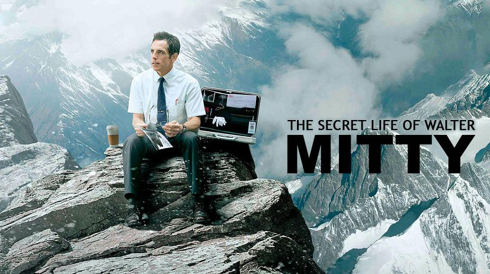
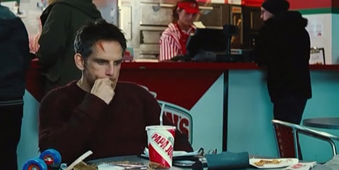
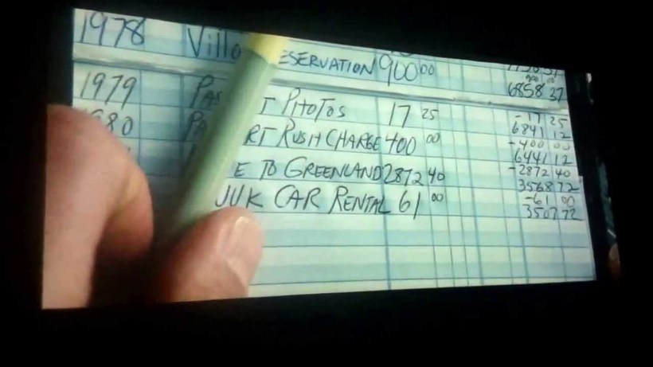
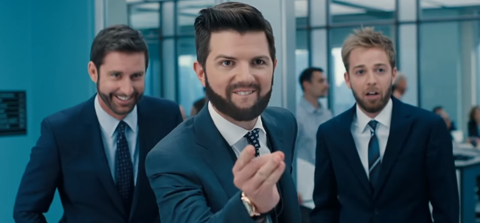
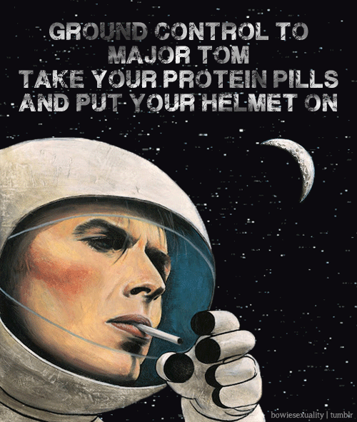

Space Oddity 가사 해설 - 월터의 상상은 현실이 된다
게시: 2018-01-17T23:17:00+09:00

제가 무척 좋아하는 영화 중에 '월터의 상상은 현실이 된다' (원제 : The Secret Life of Walter Mitty, 월터 미티의 이중 생활)이라는 2013년 영화가 있습니다. 이 영화의 주제와 제목은 터버(James Thurber)라는 작가가 1939년에 발표한 동명 단편 소설에서 따온 것입니다만, 내용은 매우 다릅니다. 원작 소설은 그냥 백일몽에 자주 빠져 자신이 해군 조종사라든가 외과 의사라든가 하는 다른 인물이 되는 상상을 하는 월터 미티라는 평범한 남자에 대한 이야기입니다. 그러나 이 영화는 주인공 월터 미티가 자주 백일몽에 빠진다는 점만 따왔을 뿐, 유명 잡지인 라이프(Life) 지에서 사진 원판 관리를 하는 초라한 중년 독신 남자가 잡지사 폐간이라는 위기 속에서 겪는 모험과 그 속에서 찾는 새로운 희망에 대한 이야기입니다.
정말 뭉클한 마지막 장면을 포함해서, 이 영화 속에는 제가 특히 좋아하는 장면이 여럿 있습니다. 그 중 이유는 모르겠으나 다음 장면이 특히 제 마음에 와 닿더라고요.


(월터는 라이프 지가 폐간되기 전 마지막호의 표지로 사용될 유명 사진 작가의 없어진 원판 필름을 찾아 회사 몰래 자비로 아이슬란드로 갑니다. 여기서 화산 폭발의 위기에 휩싸였다가 간신히 빠져나온 뒤, 남루한 옷차림으로 파파존스 피자집에 들어가 콜라 한잔을 시켜놓고 자신의 남은 재산과 여비, 어머니 집 월세 등을 계산하다 콜라 종이컵을 보고 문득 뭔가 생각이 들어 밖으로 나온 뒤, 저녁 놀을 배경으로 한 들판에서 자신이 몰래 짝사랑하는 여직원 셰릴에게 전화를 합니다.)
셰릴 : 그래서, 당신 파파존스에서 컵 때문에 나왔다고 했쟎아요 ? 담에 제가 거기 손님으로 갈 때 알아야 할 뭐 잘못된 점이라도 있는거에요 ?
월터 : 아뇨. 그냥 제가 전에 거기서 일을 했어요. 그거 뿐이에요. 전에 전 모히칸족 헤어스타일을 하고 (used to have a mohawk)... 배낭도 있었어요... 그리고 난 앞으로 뭐가 되고 싶은지 뭘 하고 싶은지 그런 것에 대한 생각도 하곤 했지요.
셰릴 : 그런데요 ?
월터 : 아무것도 아니에요. 그냥... 전 아빠하고 아주 친했거든요. 제가 17살일 때 아빠가 돌아가셨는데, 화요일에 돌아가셨어요. 그리고 우린 저축이 전혀 없었고요. 그래서 전 목요일에 이발을 새로 하고... 바로 그 목요일에 취직을 했어요.
셰릴 : 파파존스요 ?
월터 : 예.
셰릴 : (한동안 말이 없다 갑자기 궁금하다는 듯) 근데 아빠가 모히칸족 헤어스타일 하고 다니는 걸 내버려 두셨어요 ?
월터 : 아빠가 옆머리를 밀어주셨는걸요.
셰릴 : (웃으며) 정말 쿨한 아빠였군요. (That's a good dad move.)
뭔가 짠하지 않습니까 ? 아마 저는 저 위 장면에서, 가난해도 용기를 잃지 않고 열심히 일할 의욕만 있다면 인간의 존엄성을 잃지 않을 수 있다는, 그런 메시지가 마음에 들었나 봅니다. 그러자면 그렇게 열심히 일하면 비록 뛰어난 학벌과 자본이 없어도 품위를 지키며 살 수 있도록 적절한 수준의 최저임금과, 무엇보다 충분한 일자리가 필요하지요. 보수우파의 말에 따르면 최저임금을 올리면 일자리가 없어진다는데, 글쎄요, 여기서는 그런 이야기는 하지 마시지요.
당장 월터만 하더라도 학벌도 돈도 없기 때문에, 폐간이 확정된 라이프 지에서 해고되지 않기 위해 온갖 노력을 다합니다. 그러나 라이프 지의 구조 조정을 위해 점령군처럼 찾아온 경영진인 젊은 턱수염 중역은 가끔 백일몽에 빠지는 월터를 무척 고깝게 보고 무시하고 심지어 놀립니다. 영화 초반부에, 복도에서 멍하니 백일몽에 빠져 있는 월터에게 '여기는 관제탑, 톰 소령 나와라 오버'를 읊으며 종이클립을 월터의 머리에 던지는 짓까지 하지요.

여기서 '톰 소령'이라는 말은 갑자기 왜 나올까요 ? 여기에 대해서는 영화 중반 즈음에 셰릴의 입을 통해서 설명이 됩니다.
셰릴 : 당신에 해 줄 말이 있어요. 그 노래 있쟎아요, '톰 소령' ? 그거요. 전에 그 턱수염 양반이... 그 사람은 자기가 뭔 소리 하는지도 모르는 거에요. 그건 미지의 세계로 나아가는 용기에 대한 노래에요. 아주 근사한 노래라고요.
그리고 나중에 월터가 필름을 찾아 그린란드에 가서 술취한 조종사가 막 이륙시키려는 헬기에 탈까말까를 고민할 때 (물론 월터의 백일몽 속에서) 셰릴이 직접 나타나 그 '톰 소령' 노래를 부르며 월터에게 용기를 주지요.
그 3분 정도 되는 장면과 거기서 나오는 그 노래는 아래 유튜브에서 보실 수 있습니다.

그 '톰 소령' 노래의 원제는 "Space Oddity" (우주 괴짜) 이고, 원래 1969년 아폴로 11호의 달착륙 얼마 전에 발표된 데이빗 보위의 노래입니다. 멜로디도 독창적이지만, 그 가사는 더욱 독창적입니다. 역시 이유는 잘 모르겠으나, 저는 가사 중 and there's nothing I can do 라는 부분이 무척 마음에 듭니다. 사람들은 자신들이 아주 중요하고 의미있는 존재라고 생각하지만, 사실 대우주 속에서 인간은 티끌에 불과하쟎아요 ?

"Space Oddity"
Ground Control to Major Tom
Ground Control to Major Tom
Take your protein pills
and put your helmet on
지상관제소에서 톰 소령에게
지상관제소에서 톰 소령에게
단백질 알약을 먹고
헬멧을 써라
Ground Control to Major Tom
Commencing countdown,
engines on
Check ignition
and may God's love be with you
지상관제소에서 톰 소령에게
카운트다운 시작한다
엔진 시동
점화 확인
신의 은총이 귀관과 함께 하길
Ten, Nine, Eight, Seven, Six, Five, Four, Three, Two, One, Liftoff
10, 9, 8, 7, 6, 5, 4, 3, 2, 1, 이륙
This is Ground Control
to Major Tom
You've really made the grade
And the papers want to know whose shirts you wear
Now it's time to leave the capsule if you dare
여기는 지상관제소,
톰 소령 나와라
귀관이 정말 해냈다
신문에서는 귀관이 누구의 셔츠를 입고 있는지 궁금해 한다
그럴 용기가 있다면 이제 선실 밖으로 나설 시간이다
This is Major Tom to Ground Control
I'm stepping through the door
And I'm floating in a most peculiar way
And the stars look very different today
여기는 톰 소령 지상관제소 나와라
지금 햇치 밖으로 나가고 있다
난 아주 기묘한 방식으로 유영 중이다
오늘은 별들이 아주 색다르게 보인다
For here Am I sitting in a tin can
Far above the world
Planet Earth is blue
And there's nothing I can do
여기 난 양철깡통 속에 앉아 있다
세상 저 높은 궤도 속이다
지구는 푸르고
여기서 내가 할 수 있는 것은 아무 것도 없다
Though I'm past one hundred thousand miles
I'm feeling very still
And I think my spaceship knows which way to go
Tell my wife I love her very much
she knows
내 속도는 시속 10만마일을 넘었지만
난 아주 고요하다고 느낀다
내 우주선은 가야할 항로를 잘 아는 것 같다
아내에게 많이 사랑한다고 전해달라
그녀도 안다
Ground Control to Major Tom
Your circuit's dead,
there's something wrong
Can you hear me, Major Tom?
Can you hear me, Major Tom?
Can you hear me, Major Tom?
Can you....
지상관제소에서 톰 소령에게
귀관의 회로가 먹통이다
뭔가 잘못 되었다
내 말 들리는가, 톰 소령 ?
내 말 들리는가, 톰 소령 ?
내 말 들리는가, 톰 소령 ?
내 말...
Here am I floating round my tin can
Far above the Moon
Planet Earth is blue
And there's nothing I can do.
난 내 양철 깡통 주변을 유영 중이다
달 위 저 높은 궤도 속이다
지구는 푸르고
여기서 내가 할 수 있는 것은 아무 것도 없다
* 사족 : 요즘 외화 제목은 영어 원제를 그대로 한글로 표기하는 경우가 많습니다. 과거에는 무슨 규정 때문에 반드시 한글로 번역을 해서 외화 제목을 정해야 했는데, 그래서 '젊은이의 양지' (원제 A place in the Sun)이라든가 '우리에게 내일은 없다' (원제 Butch Cassidy and the Sundance Kid)와 같은 정말 문학적으로 멋진 영화 제목이 많았습니다. 이 '월터의 상상은 현실이 된다'라는 제목도 원제보다 훨씬 뛰어난, 정말 오랜만에 보는 멋진 제목이라고 생각됩니다.